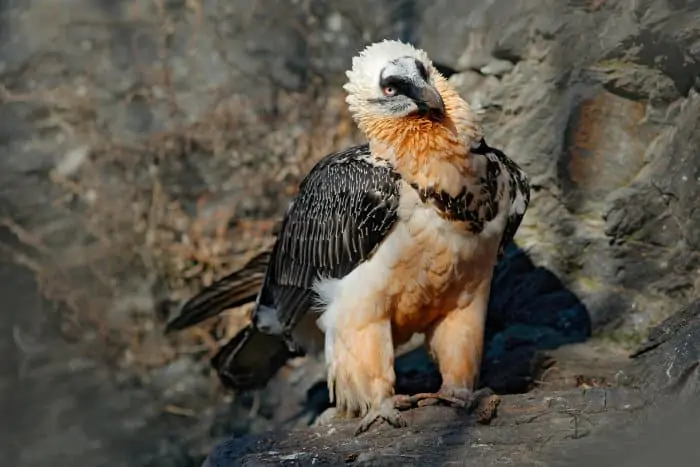

Etymology
Bearded vultures are so named for the long, broad, black bristles that grow from the base of the bill that resemble a beard.
An old, common name for these birds is Lammergeier which comes from a German word meaning lamb-vulture. This name was given to bearded vultures as they were often seen carrying large animal bones and assumed to kill farmers' livestock.
Several languages make reference to its diet, like its old latin name, Ossifrage or the spanish Quebrantahuesos (both meaning bone breaker).
Appearance
As explained above, this bird has a bristly chin that looks very much like a beard. Their wings and tail are black or dark grey, while the head and breast are naturally white.
However, only captive lammergeiers will be white in appearance. In the wild, the birds rub themselves against ferric oxides and drink from mineral-rich waters, turning their feathers a deep rust colour.
They also have black markings on their faces, contrasting beautifully with the rusty feathers and making them look particularly distinct.
Unlike most vultures, the bearded vulture does not have a bald head. It’s fully feathered, protecting it from the cold. The head is relatively small, with a wide, powerful neck.
When they hatch, nestlings are covered in dark downy feathers. They go through multiple moultings and remain dark when they’re juvenile. When they become adults, they lose the dark feathers on their head and chest, replacing these with white feathers.
Diet
This unique vulture’s diet consists of between 70 and 90 percent bone. Like other vultures, the bearded vulture is a scavenger, feeding on dead animals that it finds.
However, it usually ignores the meat of the carcasses, preferring to go after the bone marrow. Its beak is specialised to feed this way, and it can swallow bones whole, or bite through brittle ones.
Even more interestingly though, the large bird has developed a way to break the larger, hardier bones it finds. It flies up with the carcass (up to around 4 kg) and drops it from the air. The bones shatter, facilitating the process to get to the marrow.
Habitat
These bone feeding vultures live high up in various mountains across the continents. You’ll find them in southern Europe, India, Africa, Tibet, and the Caucasus. Thanks to conservation efforts, you could even see them in the Alps.
Once more common in many mountain ranges around the world, these bone-eating vultures have become endangered due to hunting practices and human interference.
Bearded vultures defend massive territories, breeding, raising their young, and feeding within this space – between 200 and 400 square km.
Mating habits
The bearded vulture’s mating display is an impressive sight. They spiral through the sky, tumbling and showing their talons to their desired partner. Often, mating pairs fly together, hooking their talons and falling quite a distance before separating again.
When they’re ready to breed, the vultures build a giant nest of 1 – 2.5 meters, which grows every year as they nest again. It’s usually a massive pile of sticks, covered by animal matter.
They lay a clutch of 1 – 2 eggs. These eggs incubate for about 55 days. When they’ve hatched, young are dependent on their parents for up to 2 years, spending 100 days before even fledging.
Image Gallery
